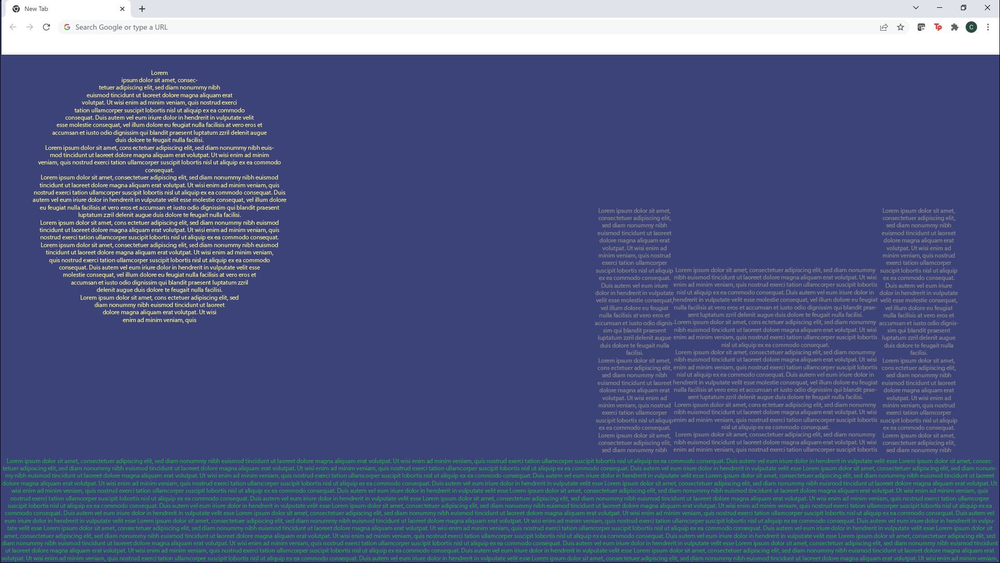
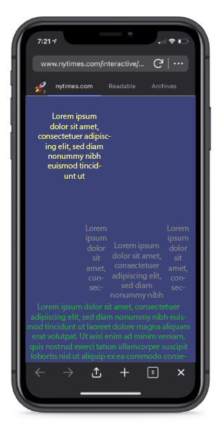
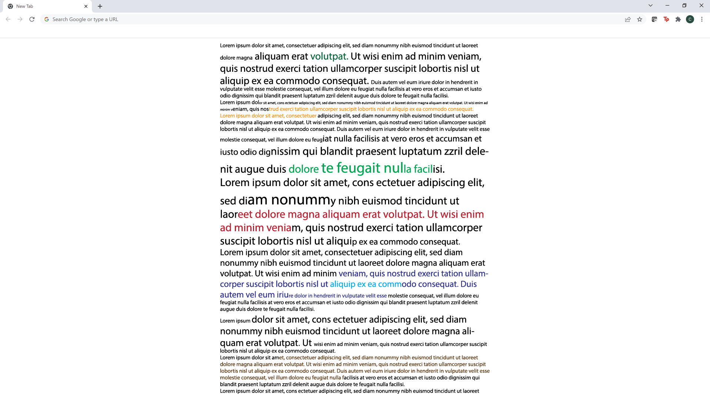
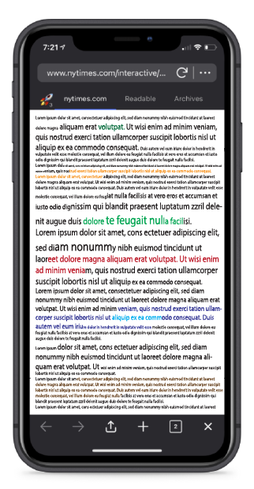
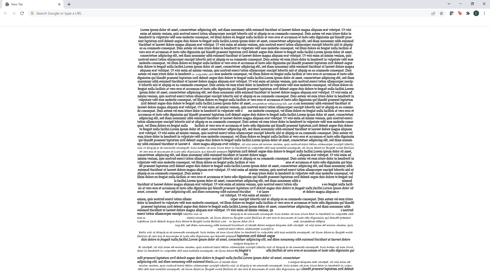
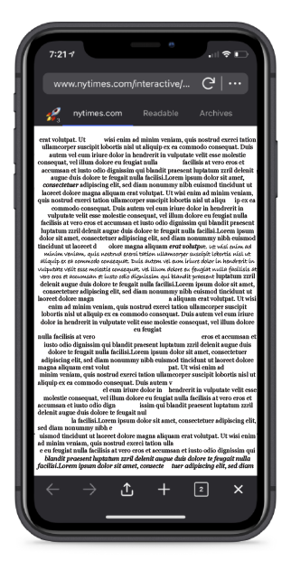

The author of this fairy tale focuses a lot on describing the landscape and scenery. I think it would be very intersting to emphasize the same things that is emphasized in the physical book as in the website. I will do this by using text box shapes and colors (as well as backround colors occasionally) to mimic actual objects, things, and people. One option I thought of is if the next section takes place in the castle (as shown in the example below) then the reader will have to click the castle to advance to the next page.
One possible issue that would arise is the different browser dimensions such as a monitor vs a phone. One solution would be to have the word shapes be actual png pictures of the word shapes so that they would not get distorted. Another solution could be to use flex boxes although I am not very familiar with those so I would have to do a lot of research.
 Because the story is so descriptive, my second idea is to have a really long page just filled with words. I will adjust the size, boldness, underline, font, and color to reflect what is being said in the story. For example, if the text is describing a large body of water, I would make the text large and blue. If the text is calling someone bold, then I will bold that sentence. If someone is going crazy, I may change the font and italicize it
 My third idea is to have another really long page of words but it would gradually change to show Eckbar and Bertha going insane. The text will start of formatted normally but as Bertah begins to share her sinful past, the text will begin to have more spaces, gaps, and italics until it reaches the point where Bertha dies of guilt. Then the text will retun to normal but then change to show Eckbar going insane until he dies of agony. I will also play around with what fonts are available and if fonts look like a crazy person's script that I can transition to
 